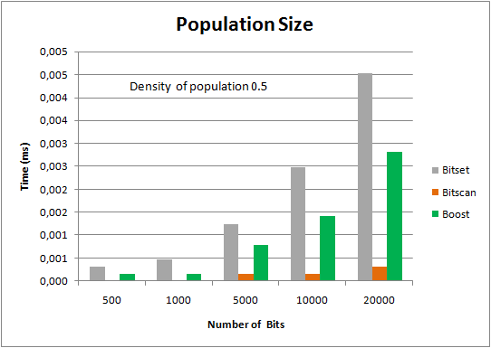
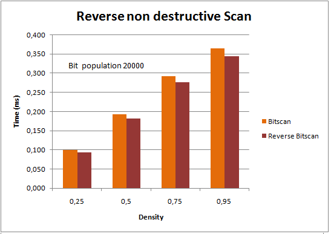
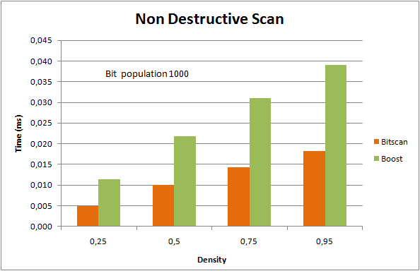
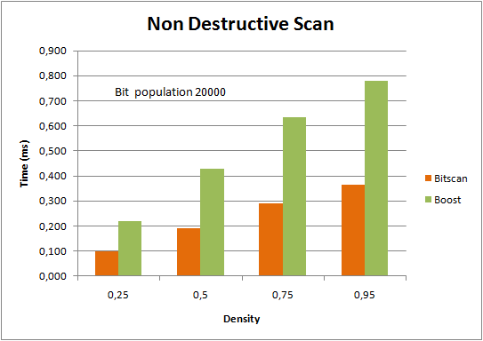
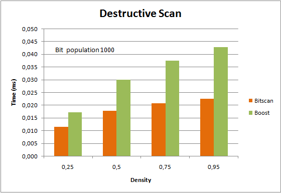
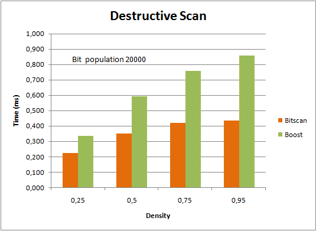

BITSCAN 1.0, our exclusive C++ library developed by Pablo San Segundo for sets of bits greater than the CPU register word, has proven its efficiency!
In order to find out if BITSCAN was fast enough to be a substantial improvement over other libraries that manage bit strings, it has been compared with std::bitset and boost::dynamic_bitset similar data structures.
A comment on basic features
STL ‘s Bitset (stl∷bitset) is NOT dynamic (i.e. the size of the bit string must be provided in compilation time by as a template parameter), so it does not actually provide the same functionality.
Boost´s Dynamic Bitset (boost:dynamic_bitset) is similar in functionality in fast forward bit scanning. However, Boost does NOT currently support reverse bit scanning which is important in many applications.
The test
We have compared the following functions:
1-Bit access: The ability to test whether a given bit is present in a given position
2-Population count: The ability to count the number of bits to 1 in a bitstring
3-Forward bit scanning (also known as LSB scanning) over the whole range of the bit string: Extracts the position of the 1-bits in sequential order starting from the least significant.
4-Reverse bit scanning (also known as MSB scanning) over the full range of the bit string: Same as (3) but in reverse order (and typically slower). As mentioned earlier neither Boost (nor STL) currently support this functionality in their bit data structures. Actually the boost::dynamic_bitset interface has only find_first(…) and find_next(…) functions and it would be really nice if in the next version find.last(…) and find_previous(..) were available, since there are many applications where this is very useful indeed.
In the cases of bit scanning (3, 4) we have considered two variants which are related to the typical use in concrete applications: A) Destructive and B) Non destructive.
- In (A) or destructive case, once the position of the bit is read it is removed from the bitstring. This somehow easies the task of bit scanning because the main loop only has to look for the least (most) significant bit at each step. The bad part is that the information is lost.
- In the non-destructive case (B), the bit string is left intact at the end of the process. This requires additional operations w.r.t. (A) to filter out those 1-bits already picked at each 64-bit block.
The code used to run these tests is located here: https://www.biicode.com/pablodev/blocks/pablodev/bitscan_tests/branches/master.
BOOST should be installed in your local machine if you want to execute it.
Test configuration
Tests have been carried out on an Intel(R) Core(TM) i7 CPU 920 @ 3.67GHz, 6GB RAM with a Windows 7, 64bit O.S.
We considered bit strings with different populations (n ranging from 500 up to 20.000) and distributions (uniform densities d, range from 0.25 up to 0.9) to test the ability of the data structures to reason from one bit-block to another. In all cases results are averaged over 100.000 repetitions.
Figure 1 shows performance results. From now on we will refer to the different bit string implementations by the source (i.e. BOOST, STL and BITSCAN) for simplicity. The concrete tests are:
- Population count (Figure 1, A) : Counting of 1 bits has been tested on the three implementations.
- Destructive scans (Figure 1, E and F) : Scans which involve bit deletion after reading have been tested on BITSCAN and BOOST. STL has been left out because it is not dynamic.
- Non destructive scans (Figure 1, C and D) : Scans which do not involve bit deletion after reading have been tested on BITSCAN and BOOST. STL has been left out similar to (2).
- Reverse bit scan (Figure 1, B): It has been compared against forward bit scanning only in BITSCAN since the other implementations do not offer a specific function for this task.
- Access to bit positions: We have also tested concrete bit access in the 3 implementations. Reported results are not included because performance has been very similar in all cases.
|  |  |
| A) Computation of the number of bits for the three implementations with 0.5 density and varying population. | B) BITSCAN reverse scanning for n=20.000 and different densities. |
|  |  |
| C) Non destructive scan comparison for n=1.000 and different densities. | D) Non destructive scan comparison for n=20.000 and different densities. |
|  |  |
| E) Destructive scan comparison for n=1.000 and different densities. | F) Destructive scan comparison for n=20.000 and different densities. |
| Figure 1. Performance tests for BITSCAN, BOOST and STL bitstring implementations | |
Evaluation
Population count is between 3x to 5x faster in BITSCAN than BOOST and STL, probably because the machine used for the tests exploited Intel´s intrinsic function library to the limit. Although the result is possibly machine dependent, the order of magnitude of the improvement is indicative.
In destructive scans, BITSCAN is around 2x compared to BOOST. Noteworthy is that BITSCAN’s performance does not change much in very dense bit strings (i.e. >0.75) , whereas BOOST shows certain degradation.
In the “regular” non destructive scan, BITSCAN is even slightly better (2.20x approx.) than in the previous case possibly because it caches better critical information related to the last bit read.
As to reverse (backwards) scanning, it performs comparably to forward scanning in BITSCAN and may be used without penalty.
Conclusions
This report shows that BITSCAN is a leading state of the art alternative for programmers which look for efficiency in their implementations. Cutting edge research is showing that many combinatorial problems encoded with bit strings may be solved many times faster. Biicode sincerely hopes BITSCAN helps C, C++ developers throughout the world to make their code faster. It has already been employed successfully in a number of difficult and well known problems from the graph domain and many research papers describe how it can be done [1, 2, 3, …].
Moreover Biicode hopes it may be improved by following our reuse paradigm. This will be an even more exciting test!
Related Posts
Pingback: Exclusively at biicode, BitScan library! | Biicode Blog()
Pingback: A quick approach to BITSCAN - Biicode Blog()
Pingback: Sparse bitsets in C++ with BITSCAN - biicode Blog()
Pingback: BITSCAN: C++ library for bit strings - biicode Blog()